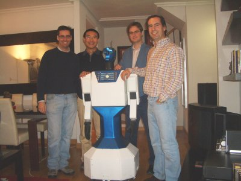

Aprovechando la visita de Houxiang a Madrid, Andrés y yo le llevamos a ver a
SAM,
el robot de protocolo creado por Quark Robotics,
la empresa de Alejandro Alonso.
{kind=link}
La idea es muy interesante. Las empresas contratan sus servicios para anunciar sus productos. En la pantalla que tiene en el pecho se muestra la información y la gente puede interactuar apretando los botones situados a ambos lados. SAM, por medio del sintetizador de voz habla sobre estos productos, mientras mueve la cabeza y los brazos.
{kind=link}
En este vídeo se puede ver al robot en acción. En este caso el anunciante que lo ha contratado es Correos:
El diseño del robot es espectacular. Es modular. Cabeza y pecho por un lazo, el cuerpo por otro y finalmente la base motriz que le permite desplazarse. Además es muy robusto y fiable.
La visita terminó con el tradicional “picnic” donde estuvimos hablando sobre diferentes proyectos robóticos 🙂
{kind=link}
Enhorabuena Alejandro por este magnífico robot. Todo un ejemplo de Innovación en este campo tan prometedor de la robótica.